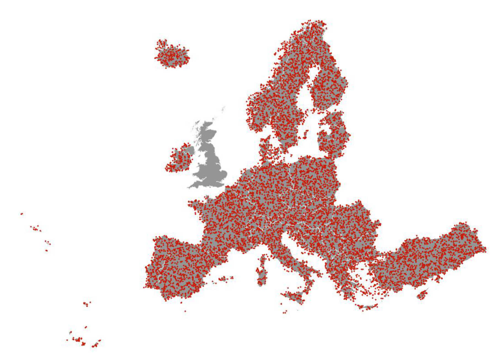
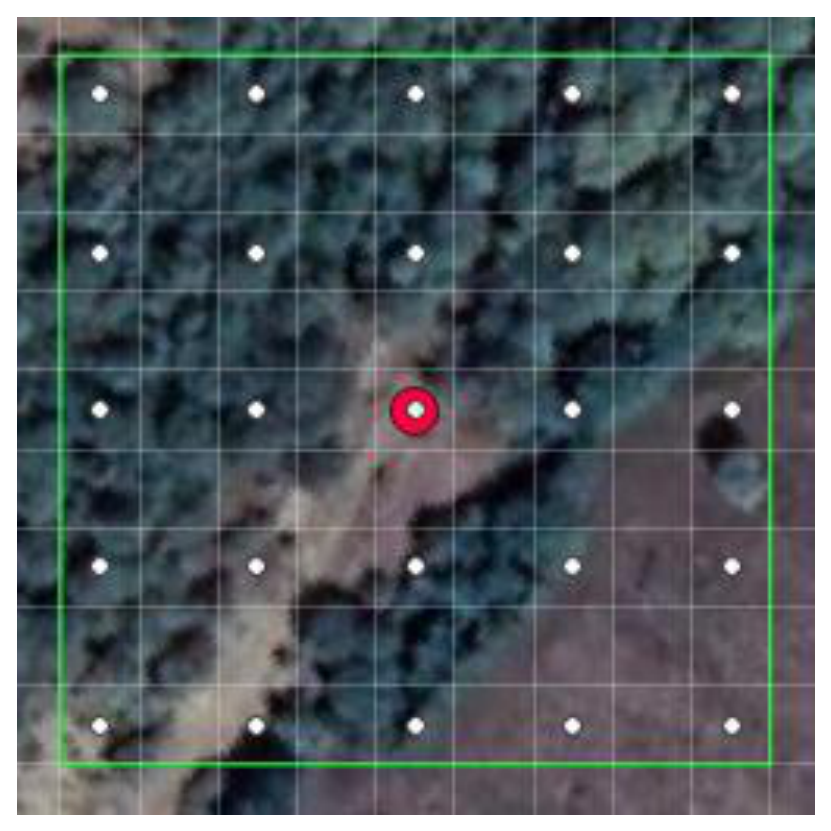
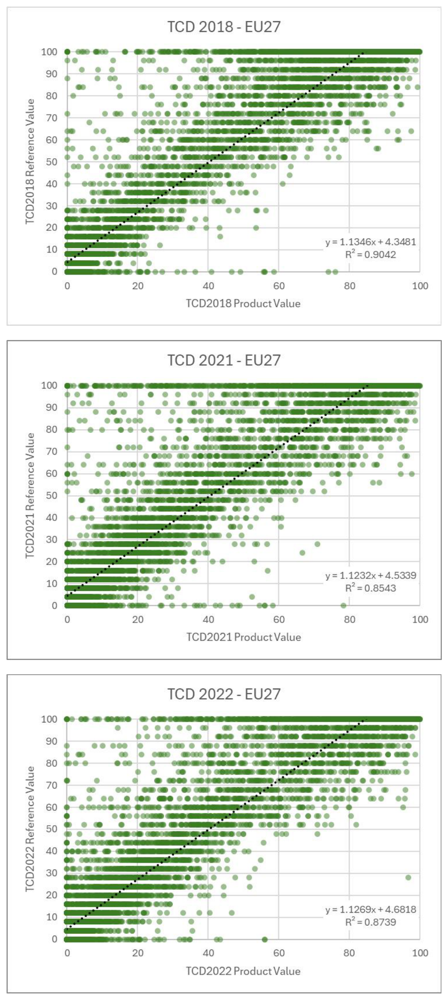
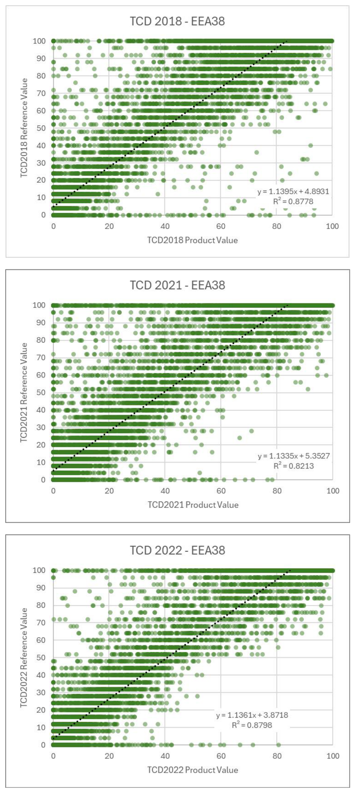
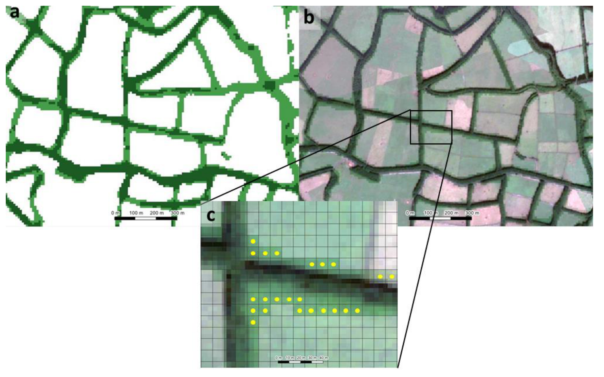

HRL TREE COVER & FORESTS - PRODUCT USER MANUAL
Copernicus Land Monitoring Service – High Resolution Layer – Tree Cover & Forests
Product User Manual (PUM), HRL Tree Cover & Forests, Tree Cover Density (TCD), Dominant Leaf Type (DLT), Forest Type (FTY), Tree Cover Presence Change (TCPC), Thematic accuracy assessment, Copernicus Land Monitoring Service (CLMS), European Environment Agency (EEA), Sentinel-2 imagery, Quality assessment procedures, Land Use, Land Use Change and Forestry (LULUCF)
Contact:
European Environment Agency (EEA)
Kongens Nytorv 6
1050 Copenhagen K
Denmark
https://land.copernicus.eu/
0.1 List of Figures
Figure 3-1 Evolution of HRL Forest and Grassland towards the three product groups HRL Tree Cover & Forests, HRL Grasslands, HRL Croplands. Figure 5-1: Products within the HRL vegetated land cover characteristics. Figure 5-2: High-level overview of the relationship between the Base Vegetation Layer and the subsequent production of Grasslands, Croplands and Tree Cover & Forests products………….. 12 Figure 6-1: Right: Tree Cover Presence Change documenting tree cover loss areas between 2018- 2021 in Harz mountains, Germany. Left side shows S2 scenes (top left: 2018, bottom left: 2021) with clearly visible clear cut sides (yellow circle) and dead trees (red circle), caused by drought and bark beetle infestation Figure 6-2: DLT time series showing the gradual decrease of coniferous tree cover from 2018 to 2021. Figure 7-1: LAEA tile layout including distinction between tiles to cover EU27 and EEA38. …… 17 Figure 7-2 HRL Tree Cover & Forests product portfolio Figure 8-1: Spatial distribution of 14.000 Primary Sampling Units. Figure 8-2: Secondary Sample Units used for 2018 and 2021 Tree Cover & Forests reference layers. Red dot: initial sample; white dot: secondary sample unit; green outline: area around the initial sample that is used to derived product statistics. Figure 8-3: HRL TCD 2018, 2021 and 2022 scatterplots and correlations at EU27 level Figure 8-4: HRL TCD 2018, 2021 and 2022 scatterplots and correlations at EEA38 level Figure 8-5: Illustration of typical broadleaved tree cover commissions errors in the DLT for an area Terceira island, Portugal. Shown are a) the DLT 2022 b) an overlay of the DLT 2022 on top of the VHR IMAGE 2021 and c) a zoom of the latter and the pixels with commission errors marked in yellow.
0.2 List of Tables
Table 7-1: Elements to be included/excluded in tree cover. Table 7-2: Download content, file naming convention and file format(s) for HRL Tree Cover & Forests layers Table 7-3: Projection and spatial coverage for HRL Tree Cover & Forests layers Table 7-4: Spatial resolution for HRL Tree Cover & Forests layers Table 7-5: Temporal information for HRL Tree Cover & Forests layers. Table 7-6: Characteristics of HRL Tree Cover & Forests layers.. Table 8-1: Layers to be verified and target accuracies Table 8-2: HRL TCD validation results at EU27 level Table 8-3: HRL TCD validation results at EEA38 Level Table 8-4: DLT validation results at EU27 level Table 8-5: DLT validation results at EEA38 Level Table 8-6: HRL Tree Cover & Forests Change layers validation results at EU27 Level Table 8-7: HRL Tree Cover & Forests Change layers validation results at EEA38 level Table 0-1: Colour palette and attributes of TCD 2018-2021 Table 0-2: Colour palette and attributes of DLT layer Table 0-3: Colour palette and attributes of FTY layer. Table 0-4: Colour palette and attributes of FADSL Table 0-5: Colour palette and attributes of DLTC layer Table 0-6: Colour palette and attributes of TCPC layer Table 0-7: Colour palette and attributes of BCD layer.. Table 0-8: Colour palette and attributes of CCD layer. Table 0-9: Colour palette and attributes of TCDCL Table 0-10: Colour palette and attributes of DLTCL Table 0-11: Colour palette and attributes of TCPCCL
„Picture Coverpage © K I Photography – stock.adobe.com“
Document Control Information:
Document Control Information
| Document Title | D1.12 HRL Tree Cover and Forests Product User Manual |
| Project Title | Copernicus Land Monitoring Service - High Resolution Layer - Vegetated Land Cover Characteristics |
| Document Author | André Stumpf, Stephanie Wegscheider, Christian Siegert, Elcin Acar (GAF AG), Bert De Roo, Kasper Bonte (VITO), Tanja Gasber (GeoVille), Loïc Faucqueur (CLS) |
| Project Owner | Luca Battistella (EEA) |
| Project Manager | Christian Siegert (GAF AG) |
| Document Code | D1.12 HRL TC&F |
| Document Version | 2.3 |
| Distribution | Public |
| Date | 2025-11-03 |
1 Executive summary
Copernicus is the European Union’s Earth Observation Programme. It offers information services based on satellite Earth observation and in situ (non-space) data. These information services are freely and openly accessible to its users through six thematic Copernicus services (Atmosphere Monitoring, Marine Environment Monitoring, Land Monitoring, Climate Change, Emergency Management and Security).
The Copernicus Land Monitoring Service (CLMS) provides geographical information on land cover and its changes, land use, vegetation state, water cycle and earth surface energy variables to a broad range of users in Europe and across the world in the field of environmental terrestrial applications.
CLMS is jointly implemented by the European Environment Agency (EEA) and the European Commission’s DG Joint Research Centre (JRC).
The High Resolution Layer (HRL) vegetated land cover characteristics are a set of harmonised yearly maps dedicated to the thematic themes Tree Cover & Forests, Grasslands and Croplands. These include a rich suite of raster products mapping the yearly status of those land cover types at a spatial resolution of 10 metres and change layers at 3-yearly interval and 20-metre resolution. HRL vegetated land cover characteristics extends the time-series of the existing HRL’s Tree Cover & Forests and Grasslands and complements the CLMS portfolio with new layer dedicated to the mapping of crop types and agricultural practices such as mowing, harvest and cover crops.
2 Background of the document
2.1 Scope
This Product User Manual is the primary document that users are recommended to read before using the product. It provides a description of the product characteristics, production methodologies and workflows, and information about the product quality of the annual provision of HRL Tree Cover & Forests. Furthermore, it gives information on the terms of use and product technical support. More detailed information on the methodologies and processing workflows that were used to produce the products can be found in the Algorithm Theoretical Baseline Document (ATBD) [7].
2.2 Content and structure
In more detail, the document is structured as follows:
- Chapter 3 provides an overview of the lineage of the products in relation to previous HRL productions;
- Chapter 4 contains a review of user requirements;
- Chapter 5 provides on overview of what is included in the High Resolution Layers Vegetated Land Cover Characteristics and how the comprised products relate to each other;
- Chapter 6 presents potential application areas and example use cases;
- Chapter 7 provides a description of the products including the nomenclature and class definitions, file naming, spatial resolution format(s), etc.;
- Chapter 8 summarizes the quality assessment, validation procedure and the results;
- Chapter 9 provides information about product access and use conditions as well as the technical support.
3 Lineage of HRL Tree Cover and Forests, Grasslands, and Croplands
High Resolution Layers (HRL) on Tree Cover & Forests had already been established in the Copernicus Land Monitoring Service (CLMS) portfolio since the reference years 2012 producing initially a Dominant Leaf Type (DLT), a Tree Cover Density (TCD), and a Forest Type (FTY) map at a spatial resolution of 20 metres (Figure 3-1). Change layers and reference datasets were included with the reference year 2015. At the same time the accuracy targets were raised towards at least 90% user’s and producer’s accuracy for the DLT and TCD status layers. A further important step followed with the first production for the reference years 2018 (further referred to as Historic HRL Forest 2018) where the spatial resolution of the status layers was raised to 10 metres, the implementation of the change layers was partially reconsidered and target accuracies of 90% user’s and producer’s accuracy for the change layers were defined. In addition, new aggregated layers depicting the density of coniferous and broadleaved tree cover were introduced. With the HRL Tree Cover & Forests starting from the reference year 2018 the product specifications have been kept largely in line with the definitions used for the Historic HRL Forest 2018 [8] whereas major changes concerned in particular the move to a yearly update cycle for the status layers and changes to some confidence layers (not shown in Figure 3-1). The new HRL Tree Cover & Forests therefore replace and extend the Historic HRL Forest 2018. This does not include an update of the change layer 2015 – 2018; the new status layers for 2018 are therefore not consistent with the original change layers 2015 – 2018.
HRL’s on Grasslands had already been established in the Copernicus Land Monitoring Service (CLMS) portfolio since the reference years 2015 initially producing a status layer on the absence / presence of grassland (Figure 3-1) with a target Overall Accuracy of 85%. With the reference year 2018, the spatial resolution of the status layers was increased to 10 metres and a change layer with a target Overall Accuracy of 80% was introduced. With the HRL Grasslands starting from the reference year 2017, the product specifications have been largely maintained to ensure consistency with the definitions used for the Historic HRL Grassland 2018 [9]. In particular, the HRL Grassland (GRA) layer has been transitioned to an annual update cycle for the status layers, complemented by an additional yearly Herbaceous Cover layer that also includes temporary grassland in the reference year. A further methodological enhancement concerns the removal of the Minimum Mapping Unit (MMU) from both the PLOUGH and GRA layer starting from 2022. This adjustment was introduced to improve the current consistency between the GRA, HER, and PLOUGH layers and to eliminate artificial gains and losses resulting from MMU-induced filtering. While this change enhances the internal coherence and spatial detail of the current HRL Grassland layers, it may lead to minor differences when compared to historic layers (years before 2022) where MMU thresholds were still applied. Consequently, users should be aware that actual small-area grassland changes may be partly mixed with technical changes resulting from the removal of the MMU. New layers on the count and timing of Grassland Mowing (Minimum Mapping Unit of 0.25 ha) and changes to some confidence layers (not shown in detail in Figure 3-1) are introduced. The new HRL Grasslands therefore replaces and extends the Historic HRL Grassland 2018. This does not include an update of the change layer 2015 – 2018; the new status layers for 2018 are therefore not consistent with the original change layers 2015 – 2018.
The HRL Croplands is a new set of layers dedicated to agriculture and comprises several yearly layers mapping crop types (10-metre spatial resolution) and agricultural practices such as harvest, fallow land and secondary crops (10-metre spatial resolution, Minimum Mapping Unit of 0.25 ha).
Production 2012
Reference year: 2012 ± 1 year target accuracy: 90% overall accuracy for status layers |
Production 2015
Reference year: 2015 ± 1 year target accuracy: Minimum 90% user's/producer's accuracy for TCD and DLT |
Production 2018
Reference year: 2018 ± 1 year target accuracy: Minimum 90% user's/producer's accuracy for TCD, DLT and TCPC |
| Legend: TCD: Tree Cover Density FTY: Forest Type DLT: Dominant Leaf Type TCDC: Tree Cover Density Change DLTC: Dominant Leaft Type Change |
TCCM: Tree Cover Change Mask BCD: Broadleaved Cover Density CCD: Coniferous Cover Density * discontinued ** continued as Tree Cover Presence Change |
yearly updates of HRL Tree Cover & Forests
Production 2015
Reference year: 2015 ± 1 year target accuracy: Min. 85% OA of GRA status layer per biogeographical regions |
Production 2018
Reference year: 2018 ± 1 year target accuracy: Min. 85% OA for GRA status layer & min. 80% OA for change layer per biogeographical regions |
| Legend: GRA: Grassland GRAC: Grassland Change |
yearly updates of HRL Grasslands
Figure 3-1 Evolution of HRL Forest and Grassland towards the three product groups HRL Tree Cover & Forests, HRL Grasslands, HRL Croplands.
4 Review of User Requirements
In the frame of the Horizon 2020 (H2020) project ECoLaSS a survey [5] of key stakeholders has been performed in order to evaluate the user requirements towards the evolution of existing and future Copernicus products. This survey made also use of the results from the Nextspace User Study [6] and revealed that HRL users like European institutions, service industry, research and academia, national agencies, regional administrations, NGOs or private users would in general appreciate:
- High thematic quality/meaningful and application-oriented product definitions;
- Sufficient spatial and timely resolution concerning both, status layer and change layer;
- Short update cycles;
- Change monitoring;
- Free and open access;
- High technical quality;
- Standardized and comparable nomenclature;
- Transparent and scientific workflows and state-of-the-art methodology;
- Detailed documentation of these workflow and the respective methodology;
- Consistency of the Pan-European products enabling synergistic use of all products;
- Streamlining the pan-European product with global ones;
- Availability of historic data and compatibility of time series;
- Open access to the original Copernicus Sentinel data;
- Sophisticated product presentation and visualisation possibilities in an online viewer on the Copernicus platform;
- IPCC -compliant land-use categories..
While many of these requirements had already been satisfied with previous HRL reference years some could only be implemented within the current update:
- A long-standing thematic gap in the European CLMS portfolio concerning the monitoring of agriculture has been addressed though new products on crop types and agricultural activities. This also improves the separation between grassland and cropland and the IPCC conformity;
- Yearly update cycle for status layer;
- Grassland use intensity (or the dynamics of intensification/ extensification) is partially addressed through a new product on Grassland mowing.
Further requirements that remain to be considered for future updates are for example:
- More fine-grained differentiation among species-rich (extensively used) and separation from species-poor (intensively used) and managed grassland;
- Tree-species compositions and shifts between extensive and intensive management;
- Increased timeliness of availability of the products: The mid-term goal is a product provision at latest 12 months after the end of the reference year.
5 Product structure - What are the High Resolution Layers?
The High Resolution Layers (HRL) vegetated land cover characteristics portfolio consists of Tree Cover & Forests, Grasslands and Croplands products (Figure 5-1), which together cover most of what is defined as the Biotic component of the EAGLE Land Cover Components1. More specifically, the mapping is focused on surfaces with a vegetation cover above 30%; an exception to this is tree cover where the objective is to map tree cover with a continuous range of 1-100% Tree Cover Density (TCD), i.e. also below 30%, as far as detectable from 10-metre resolution satellite imagery. This definition is also in line with the Sparsely Vegetated class in the CLC+ Backbone Raster2 and considers that detection / classification of vegetation below this threshold is typically more error-prone. The definition also aims at largely avoiding overlaps with the non-vegetated land cover characteristics such as HRL Imperviousness, which is focused on areas with less than 10% vegetation cover during any time of the year, for a reference period of 3 year.
Some overlaps between the three product groups are allowed by definition, for example areas with tree crops (i.e. olive, fruit and nut trees) which are included in both the Tree Cover & Forests and the Croplands products. Furthermore, specific vegetations types are not included in the HRL-
VLCC portfolio; this concerns areas dominated by natural shrubs (i.e. shrubs that are not under agricultural use) and associations of lichens and mosses.
![This diagram illustrates the structure of Copernicus Land Monitoring Service (CLMS) High Resolution Layers (HRL) products focusing on vegetated land cover characteristics. The top-level category is 'High Resoluton Layers' (a typo for High Resolution Layers) covering 'vegetated land cover characteristics'. This category is divided into three distinct product types: 1. 'Tree Cover & Forest Products', which are updated 'yearly since 2018'. 2. 'Grasslands Products', which are updated 'yearly since 2017'. 3. 'Cropland Products', which are updated 'yearly since 2017'. This diagram shows the availability and update frequency of these key CLMS HRL products.](products_Product_User_Manual_-_Tree_Cover_and_Forests_2018-present-media/img-5eed06584a29d03210da45a3a94cef02.png)
Given several interdependencies and potential overlaps among the Grasslands, Croplands and Tree Cover & Forests products, the overall workflow starts with the classification of Base Vegetation Layer (BVL). A high-level description is provided for the overall workflow in Figure 5-2. The yearly BVL classification initially targets the separation of five basic land cover classes being:
- herbaceous vegetation;
- cropland;
- tree cover;
- tree crops (i.e. nomenclature overlap between broadleaved tree cover and permanent crops in the Croplands product);
- background class (including bare and sparsely vegetated areas and non-agricultural shrubs);
In a subsequent post-processing step two further classes are derived to delineate the:
- potential overlap herbaceous – cropland (i.e. pixels which are classified as cropland and herbaceous at least once in the time-series);
- The second derived class is derived from the intersection of all areas classified as tree cover and a preliminary version of the Tree Cover Density to delineate areas with low Tree Cover Density and hence allowed overlaps of herbaceous and tree cover.
The derived yearly BVL is considered for the downstream productions of Grasslands, Croplands and Tree Cover & Forests products as follows:
- For the production of the Grasslands layers: all areas classified as herbaceous, overlap herbaceous – tree cover, or overlap herbaceous – Cropland are considered as the potential maximum extent for the Herbaceous Cover (HER) layer. In addition, the BVL classification probabilities for the herbaceous class are used as the main input for the derivation of the HER layer.
- For the Croplands layers: the areas delineated as cropland, overlap herbaceous – cropland, or Tree Crops are considered as the maximum extent for the CTY classification and further refinement.
- For the Tree Cover & Forests layers: the areas classified as tree cover, overlap herbaceous - tree cover, tree crops and the respective probabilities are used directly to derive the respective change layers and yearly DLT and TCD status layers.
Within the areas identified as overlap herbaceous - cropland, a further harmonization step is carried out downstream. To this end the CTY classification initially includes a class for fodder crops which are transferred to the HER layer if occurring in the designated overlap class.
![This is a workflow diagram outlining the processing for the Copernicus Land Monitoring Service (CLMS) High Resolution Layer (HRL) vegetated land cover characteristics. The process begins with the 'Base Vegetation Layer Service,' which classifies initial land cover into 'Herbaceous,' 'Cropland,' and 'Tree Cover.' Within this service, specific overlap areas are identified: 'Overlap Herbaceous – Tree Cover (Tree Cover Density (TCD) 1-10%),' 'Overlap Herbaceous-Cropland (e.g. Fodder crops),' and 'Overlap Tree Cover-Cropland (Tree crops).' From the 'Base Vegetation Layer Service,' data is distributed: 1. 'Herbaceous' areas, considering 'Max. extent & probabilities,' are processed by 'Grassland Product Services.' 2. 'Cropland' areas, considering 'Max. extent,' are processed by 'Cropland Product Services.' 3. 'Tree Cover' areas, considering 'Max. extent & probabilities,' are processed by 'Forest Product Services.' A feedback loop exists where 'Fodder crops' data from 'Cropland Product Services' is fed into 'Grassland Product Services.' The final outputs from each product service are: - **Grassland Product Services** generate products such as 'Herbaceous Cover (10m),' 'Grassland (10m, 100m),' 'Grassland Change (20m, Minimum Mapping Unit (MMU) 1ha),' and 'Grassland Mowing Events (10m, MMU 0.25ha).' - **Cropland Product Services** generate products such as 'Crop Types (10m, MMU 0.25 ha),' 'Cropping patterns (10m, MMU 0.25 ha),' 'Main Crops, Bare Soil, Secondary Crops,' 'Fallow Land,' and 'Annual Crop Characteristics.' - **Forest Product Services** generate products such as 'Dominant Leaf Type (10m),' 'Tree Cover Density (10m, 100m),' 'Forest Type (10m, 100m),' and 'Forest Change (20m, MMU 1ha).'](products_Product_User_Manual_-_Tree_Cover_and_Forests_2018-present-media/img-0f4778c79e1edff8abc04229a8f348b7.png)
6 Product application areas and examples of use cases
The HRL Tree Cover & Forests, Grasslands and Croplands set of products is designed for use by a broad user community as basis for environmental and regional analysis and for supporting political decision-making, such as the Common Agricultural Policy (CAP), LULUCF (Land Use, Land Use Change and Forestry) regulation, the Nature Restoration Regulation (NRR), or the proposed European Forest Monitoring Law (FML). Notably, the NRR (Regulation (EU) 2024/1991) explicitly refers to the Tree Cover Density dataset as the basis for determining urban tree canopy cover, thereby establishing a direct legal reference to the HRL framework within EU legislation. With the new products the EEA will ensure continuity and further densification of the well-established HRL Tree Cover & Forests and Grasslands product time series. Those include a rich suite of raster products at a 3-yearly interval mapping the status of those land cover types with a spatial resolution of 10-metre and change layers at 20-metre spatial resolution.
As an example, the following sections provide short information on (potential) use cases at national level, for which the Copernicus HRL Tree Cover & Forests product represent a fundamental input.
6.1 Use Case: Monitoring of Tree Cover Change and Dominant Leaf Type
The Tree Cover Presence Change (TCPC) layer documents losses of tree cover between 2018 and 2021 which can serve as a reliable information source for forest authorities. The example shown in Figure 6-1 is also confirmed by the Dominant Leaf Type (DLT) layer pictured in Figure 6-2.
![The image displays a comparison of optical satellite imagery with a derived classified map illustrating tree cover changes over time. It consists of three panels: The top-left panel shows an earlier temporal snapshot of the landscape, characterised by dense tree cover, a central, elongated water body (likely a reservoir or river), and a network of tracks or unpaved roads. The bottom-left panel shows a later temporal snapshot of the same landscape. A red circle highlights an area where previous dense tree cover has visibly been removed or significantly thinned. A yellow circle highlights another area which appears to show some regrowth or new vegetation cover compared to the top image. The right-hand panel presents a classified map of tree cover change, derived from the comparison of the two satellite images. The legend defines four classes: * White (class 0): unchanged no tree cover * Green (class 1): new tree cover (a small green square is visible in the legend, but no discernible green pixels appear on the map within this displayed area) * Red (class 2): loss of tree cover * Grey (class 10): unchanged tree cover The classified map clearly delineates significant areas of tree cover loss (red), aligning with the area highlighted by the red circle in the bottom-left satellite image. Extensive areas of unchanged tree cover are depicted in grey, and unchanged non-tree covered areas (including the water body and some open land) are shown in white. All three panels share a common scale bar, ranging from 0 m to 2000 m, with increments at 400 m, 800 m, 1200 m, 1600 m, and 2000 m. This visual demonstrates the process of deriving Tree Cover & Forests layers as part of Copernicus Land Monitoring Service (CLMS) products, by analyzing changes in basic vegetation layers (BVL).](products_Product_User_Manual_-_Tree_Cover_and_Forests_2018-present-media/img-b6cee66e1f97a8f74fee6b06fd496b1a.png)
![These four choropleth maps display annual tree cover classifications for an undisclosed geographic region, likely a forested area with a central water body, over the period 2018 to 2021. Each map panel is labelled with its respective year: 2018 (top-left), 2019 (top-right), 2020 (bottom-left), and 2021 (bottom-right). The legend, consistent across all maps, uses three colour classes: * White: 0: no tree cover * Light green: 1: Broadleaved trees * Dark green: 2: Coniferous trees A prominent white area, representing 'no tree cover' or a water body, runs through the lower-central portion of all maps. From 2018 to 2020, the spatial distribution of broadleaved and coniferous trees remains relatively stable. However, the 2021 map shows a substantial increase in 'no tree cover' areas (white) across the landscape, particularly in the upper and right sections, indicating a significant reduction in overall tree cover compared to the preceding years. This change suggests extensive land cover modification, such as deforestation or other disturbances, occurred by 2021.](products_Product_User_Manual_-_Tree_Cover_and_Forests_2018-present-media/img-c4134578fe123095b3b93fc0761ceac5.png)
6.2 Use case: Land cover specific monitoring
Detailed and dynamic information on the state of the land as provided by the HRL Tree Cover & Forests layers allows to analyse regional trends in the area occupied by these land covers, which could be relevant information for authorities and policy makers. Furthermore, applications which require information on the land cover status can benefit from the HRL Tree Cover & Forests. For example, in case of biomass mapping often land cover specific parametrization is applied. Using the Tree Cover & Forests, allows to do this in a much more detailed and dynamic way. In case of the Evoland3 project, it is intended to use these layers to apply specific parametrization over tree-covered locations.
6.3 Use Case: Feasibility study for tree species mapping
Umweltbundesamt (UBA), Germany: Explorative use of the HRL Tree Cover & Forests as base information and further analysis towards derivation of tree species from Sentinel-2 data in the frame of a feasibility study with German and Austrian partners. Results from 5 case study sites show that a number of 8-16 tree species could be detected using multi-temporal Sentinel-2 data. The study showed that a high number of available cloud-free satellite scenes and the availability
There is such demand for a tree species map in Germany at:
- Umweltbundesamt (UBA -Environmental Protection Agency): Assessment and risk analysis of forest ecosystems, assessment of material discharges (critical loads), monitoring of indicators in the framework of the German Strategy for Adaptation to Climate Change.
- Bundesamt für Naturschutz (BfN – Federal Agency for Nature Conservation): renewable energy planning, requiring tree species composition to identify valuable habitats; considering adaptation to climate change.
- Thünen-Institut (TI – Federal Research Institute for Rural Areas, Forestry and Fisheries): Tree species accounting for the German State-of-Forest report („Wald-Zustandsbericht“).
7 Product description
The HRL Tree Cover & Forests layers are generally provided in 100km LAEA tiles as shown in Figure 7-1. The five French Oversea Territories are provided in UTM with the layout of the respective territory. The layers are available as Cloud-Optimized GeoTIFFs (COG) per reference year and 100km LAEA tile aligned with the EEA reference grid. Each raster file is accompanied by a Persistent Auxiliary metadata (PAM) XML and an INSPIRE XML.
The HRL Tree Cover & Forests layers comprise two yearly primary status layers: Dominant Leaf Type (DLT) and Tree Cover Density (TCD). The status layers at 10-metre spatial resolution share the same spatial extent and provide information on the leaf type (DLT) and the proportional tree cover at pixel level (TCD). These layers map trees wherever they occur, also outside of what is (technically) a forest.
In the HRL Tree Cover & Forests product there is an additional status layer that applies the FAO forest definition4, and can therefore be called a (sensu stricto) forest product: the Forest Type (FTY) layer (in 10 metres and 100 metres resolution). The fact that TCD and DLT do not have a forest definition and filtering applied, makes it possible for users to adapt the existing tree cover density / dominant leaf type layers to their own forest definition (if different from the FAO definition). Following the FAO definition, the FTY excludes tree cover with a density of less than 10%, trees located in urban areas or under agricultural use, and group of trees smaller than 0.5 ha. This information is sourced from Corine Land Cover and the HRL Imperviousness datasets and is made available in the auxiliary Forest Additional Support Layer (FADSL). The Minimum Mapping Width (MMW) of 20 metres suggested by the FAO definition is not enforced and thinner tree cover elements mapped in the DLT are retained as long as they satisfy the MMU of 0.5ha.
The yearly status layers classifications at a spatial resolution of 10 metres represent the input for two change layers which follow a 3-yearly update cycle. Those are a Tree Cover Presence Change (TCPC)5 and a Dominant Leaf Type Change (DLTC) layers in 20-metre spatial resolution and with a Minimum Mapping Unit of 1 ha. The TCPC layer includes four thematic classes out of which two indicate changes (new tree cover/loss of tree cover) between two time steps. The DLTC is derived by dedicated GIS operations from TCPC and the primary status layer (DLT) of 2018 and 2021. It includes 6 thematic classes, thereof 4 change classes.
![Choropleth map of Europe illustrating the spatial coverage of land monitoring data, categorized by two geographical scopes: EU27 and EEA38. The map features a base layer of European country outlines in grey, overlaid with a grid of squares. The legend indicates: * Green outlined squares: 'Included in EU27 coverage'. This covers the 27 EU Member States (e.g., France, Germany, Italy, Spain, Poland, Ireland, Portugal, Greece, etc.) and their associated islands like the Canary Islands, Madeira, and Azores. * Blue outlined squares: 'Included only in EEA38 coverage'. These squares extend the coverage to non-EU Member States that are part of the European Environment Agency (EEA38) network, including Norway, Iceland, the United Kingdom, Switzerland, and Turkey, as well as the Western Balkan countries (e.g., Albania, Bosnia and Herzegovina, Montenegro, North Macedonia, Serbia). The map shows that the EU27 coverage forms a contiguous block over the majority of continental Europe. The EEA38 coverage expands this to include northern Scandinavia, the British Isles, Iceland, Switzerland, and a significant portion of Southeast Europe and Anatolia. A horizontal scale bar at the bottom right indicates distances from 0 km to 1600 km, marked at 400 km intervals.](products_Product_User_Manual_-_Tree_Cover_and_Forests_2018-present-media/img-e00db7d8be8efd95fe018590f9af1505.png)
Further, aggregated layers of the status layers at 100-metre resolution are provided, as well as additional auxiliary layers and some reference datasets (Figure 7-2). The TCD at 100-metre spatial resolution is derived through spatial aggregation from the 10-metre TCD status layer for the respective reference year. Broadleaved Cover Density (BCD) and Coniferous Cover Density (CCD) layers depict respectively the percentage of broadleaved and coniferous pixel at 100-metre spatial resolution. They are derived through aggregation of the 10-metre DLT for the respective reference year.
![This diagram illustrates the data product structure for the Copernicus Land Monitoring Service (CLMS) High Resolution Layer (HRL) Tree Cover & Forests, provided yearly since 2018. The product suite is organised into four main categories: Status, Change, Ancillary, and Reference. The **Status** category includes products describing current forest characteristics: * Dominant Leaf Type (DLT) at 10m resolution. * Tree Cover Density (TCD) at 10m and 100m resolutions. * Forest Type (FTY) at 10m and 100m resolutions. * Broadleaved Cover Density (BCD) at 100m resolution. * Coniferous Cover Density (CCD) at 100m resolution. The **Change** category includes products for detecting forest changes: * Tree Cover Presence Change (TCPC) at 20m resolution. * Dominant Leaf Type Change (DLTC) at 20m resolution. The **Ancillary** category provides support and confidence layers: * Dominant Leaf Type Confidence Layer (DLTCL) at 20m resolution. * Tree Cover Density Confidence Layer (TCDCL) at 20m resolution. * Tree Cover Presence Change Confidence Layer (TCPCCL) at 20m resolution. * Forest Additional Support Layer (FADSL) at 10m resolution. The **Reference** category contains: * Samples for internal accuracy assessment (FORREF).](products_Product_User_Manual_-_Tree_Cover_and_Forests_2018-present-media/img-5ad86979641a90d95be4b7b74e8133a8.png)
7.1 Thematic characteristics of the Tree Cover & Forests Product
Table 7-1 provides an overview of the Land Cover (LC) and Land Use (LU) features that shall be included or excluded in the “tree cover” mapping, if detectable from the satellite imagery. In general, this definition has been kept consistent with previous productions since the initial reference year 2012.
The Tree Cover Density (TCD) is defined as the „vertical projection of tree crowns to a horizontal earth’s surface“ and provides information on the proportional crown coverage per pixel. Reference TCD values have originally been derived using Very High Resolution (VHR) satellite data and/or aerial ortho-imagery as reference data. Thereby TCD is assessed on different VHR sources by visual interpretation following a 10x10 point grid approach, resulting in proportional density information on a 100 x 100 metres grid level. This density information can be linked with the average spectral values from the input satellite data to train regression models which are subsequently used to estimate the TCD for areas where no reference data is available.
TCD shows a natural sensitivity towards phenology and radiometric influences (e.g. haze). Consequently, the magnitude of TCD values strongly relies on the availability and quality of adequate satellite input data and reference data and may vary regionally. Furthermore, extreme weather events and climate conditions (e.g. European drought 2018) show a negative influence on the magnitude of density values due to leaf colouring and leaf shedding.
Table 7-1: Elements to be included/excluded in tree cover
| Elements included in the tree covered area (if tree cover can be detected from the 10-metre imagery) |
Elements excluded from tree covered area (if no tree cover can be detected from the 10-metre imagery) |
|
|
7.2 Download content, file naming convention and file format(s)
Table 7-2: Download content, file naming convention and file format(s) for HRL Tree Cover & Forests layers
| Name of layer | Acronym | Abbreviation | Data format | Metadata |
| Tree Cover Density (10 m) | TCD | TCD_S2018_R10m TCD_S2019_R10m ... TCD_S2023_R10m |
Tiles of Cloud-Optimized GeoTIFF aligned with the 100km LAEA grid and with embedded colormaps, as well as separate colour legends in the formats \*.qml, \*.sld and \*.lyr | XML metadata files according to INSPIRE metadata standards and GDAL-style Permanent Auxiliary Metadata (PAM)\*.aux.xml including statistics and Raster Attribute Table |
| Tree Cover Density (100 m) | TCD | TCD_S2018_R100m TCD_S2019_R100m ... TCD_S2023_R100m |
||
| Dominant Leaf Type (10 m) | DLT | DLT_S2018_R10m DLT_S2019_R10m ... DLT_S2023_R10m |
||
| Tree Cover Presence Change (20 m) | TCPC | TCPC_C2018-2021_R20m | ||
| Dominant Leaf Type Change (20 m) | DLTC | DLTC_C2018-2021_R20m | ||
| Forest Type (10 m) | FTY | FTY_S2018_R10m FTY_S2021_R10m |
||
| Forest Type (100 m) | FTY | FTY_S2018_R100m FTY_S2021_R100m |
||
| Forest Additional Support Layer (10 m) | FADSL | FADSL_S2018_R10m FADSL_S2021_R10m |
||
| Broadleaved Cover Density (100 m) | BCD | BCD_S2018_R100m BCD_S2019_R100m ... BCD_S2023_R100m |
||
| Coniferous Cover Density (100 m) | CCD | CCD_S2018_R100m CCD_S2019_R100m ... CCD_S2023_R100m |
||
| Tree Cover Density Confidence Layer | TCDCL | TCDCL_S2018_R10m TCDCL_S2019_R10m ... TCDCL_S2023_R10m |
||
| Dominant Leaf Type Confidence Layer (10 m) | DLTCL | DLTCL_S2018_R10m DLTCL_S2019_R10m ... DLTCL_S2023_R10m |
||
| Tree Cover Presence Change Confidence Layer (20 m) | TCPCCL | TCPCCL_C2018-2021_R20m |
7.3 Projection and spatial coverage
Table 7-3: Projection and spatial coverage for HRL Tree Cover & Forests layers
| Name of layer | Acronym | Spatial coverage | Coordinate reference system (WKT) |
| Tree Cover Density | TCD | 5.751.002 km² (covering the full EEA-38) |
PROJCS["ETRS89-extended / LAEA Europe",
GEOGCS["ETRS89",
DATUM ["European_Terrestrial_Reference_System_1989",
SPHEROID ["GRS 1980",6378137,298.257222101,
AUTHORITY["EPSG","7019"]],
AUTHORITY["EPSG","6258"]],
PRIMEM["Greenwich", 0,
AUTHORITY["EPSG","8901"]],
UNIT["degree", 0.0174532925199433,
AUTHORITY["EPSG","9122"]],
AUTHORITY["EPSG","4258"]],
PROJECTION ["Lambert_Azimuthal_Equal_Area"],
PARAMETER ["latitude_of_center",52],
PARAMETER ["longitude_of_center", 10],
PARAMETER ["false_easting",4321000],
PARAMETER["false_northing",3210000],
UNIT["metre", 1,
AUTHORITY["EPSG","9001"]],
AXIS["Northing", NORTH],
AXIS["Easting", EAST],
AUTHORITY["EPSG","3035"]]
|
| Dominant Leaf Type | DLT | ||
| Tree Cover Presence Change | TCPC | ||
| Dominant Leaf Type Change | DLTC | ||
| Forest Type | FTY | ||
| Forest Additional Support Layer | FADSL | ||
| Broadleaved Cover Density | BCD | ||
| Coniferous Cover Density | CCD | ||
| Tree Cover Density Confidence Layer | TCDCL | ||
| Dominant Leaf Type Confidence Layer | DLTCL | ||
| Tree Cover Presence Change Confidence Layer | TCPCCL |
```{=typst}
#set page(flipped: false, paper: "a4")
#set text(size: 11pt)7.4 Spatial resolution
The native spatial resolution of the Tree Cover & Forests products DLT, TCD and FTY is 10 metres and linked to the highest resolution of Sentinel-2 (red, blue, green and near-infrared bands) as the primary input data source. For products at 20 metres and 100 metres, aggregation rules are defined in the ATBD 6. The spatial resolution should, however, not be confused with the size and location-precision of the elements that can be represented in the maps. The latter is limited by certain factors that are intrinsic to the available input data:
- Ground Resolved Distance (GRD) is a metric that better reflects the spatial resolution of a satellite sensor than the spatial resolution of the image. For Sentinel-2 recent estimates suggest a GRD around 12.5 metres [10]
- To fully leverage Sentinel-2, the analyses of the time-series are essential. Since the completion of the reprocessing of Sentinel-2 Colllection-1 the multi-temporal co-registration is better than 4m in most cases whereas observations until August 2021 only had a co-registration accuracy of 12 metres before the reprocessing7.
While it is difficult to quantify the cumulative effect and variability of these factors, limited detectability and spatial uncertainty of elements at a scale from 10-20 metres should probably be considered for the usage and validation of the maps.
Table 7-4: Spatial resolution for HRL Tree Cover & Forests layers
| Name of layer | Acronym | Pixel size | MMU |
|---|---|---|---|
| Tree Cover Density | TCD | 10 m / 100 m | N/A |
| Dominant Leaf Type | DLT | 10 m | N/A |
| Tree Cover Presence Change | TCPC | 20 m | MMU 1.0 ha per change classes (incl. hole filling of no-change patches inside change areas) |
| Dominant Leaf Type Change | DLTC | 20 m | Inherited from TCPC no further MMU on leaf type classes applied |
| Forest Type | FTY | 10 m / 100 m | 0.5 ha |
| Forest Additional Support Layer | FADSL | 10 m | N/A |
| Broadleaved Cover Density | BCD | 100 m | N/A |
| Coniferous Cover Density | CCD | 100 m | N/A |
| Tree Cover Density Confidence Layer | TCDCL | 10 m | N/A |
| Dominant Leaf Type Confidence Layer | DLTCL | 10 m | N/A |
| Tree Cover Presence Change Confidence Layer | TCPCCL | 20 m | 1.0 ha inherited from TCPC |
7.5 Temporal information
Table 7-5: Temporal information for HRL Tree Cover & Forests layers
| Name of layer | Acronym | Reference year |
|---|---|---|
| Tree Cover Density | TCD | 2018 |
| Dominant Leaf Type | DLT | 2019 |
| Broadleaved Cover Density | BCD | 2020 |
| Coniferous Cover Density | CCD | 2021 |
| Tree Cover Density Confidence Layer Confidence Layer | TCDCL | 2022 |
| Dominant Leaf Type Confidence Layer | DLTCL | 2023 |
| Forest Type | FTY | 2018, 2021 |
| Forest Additional Support Layer | FADSL | |
| Tree Cover Presence Change Confidence Layer | TCPCCL | |
| Tree Cover Presence Change | TCPC | 2018 vs. 2021 |
| Dominant Leaf Type Change | DLTC |
7.6 Product characteristics and class codes
Table 7-6: Characteristics of HRL Tree Cover & Forests layers
| Name of layer | Acronym | Classified feature | Class coding |
| Tree Cover Density | TCD | Tree cover; tree cover density from 1-100%. According to the vertical projection of tree crowns to a horizontal earth's surface as assessed by means of VHR satellite imagery with sub-metre resolution | 0: all non-tree covered areas 1-100: tree cover density in % 255: outside area |
| Dominant Leaf Type | DLT | Dominant leaf type: broadleaved or coniferous. | 0: all non-tree covered areas 1: broadleaved trees 2: coniferous trees 255: outside area |
| Tree Cover Presence Change | TCPC | Increase or decrease of tree cover extent. | 0: unchanged areas with no tree cover 1: new tree cover 2: loss of tree cover 10: unchanged areas with tree cover 255: outside area |
| Dominant Leaf Type Change | DLTC | Various possible leaf type changes between two reference years. | 0: unchanged areas with no tree cover 1: new broadleaved cover 2: new coniferous cover 3: loss of broadleaved cover 4: loss of coniferous cover 10: unchanged areas with tree cover 255: outside area |
| Forest Type | FTY | Forest Type: broadleaved or coniferous, largely following the FAO forest definition: >TCD 10%; >0.5 ha MMU; Urban trees and trees under predominantly agricultural use are |
0: all non-forest areas 1: broadleaved forest 2: coniferous forest 255: outside area |
| Forest Additional Support Layer | FADSL | Trees in urban context, trees predominantly used for agricultural practices. | 0: all non-tree covered areas, and tree cover without urban context or agricultural use 3: trees predominantly used for agricultural practices - broadleaved (from CLC2018) 4: trees in urban context - broadleaved and coniferous (from IMD2018) 5: trees in urban context - broadleaved and coniferous (from CLC2018) 255: outside area |
| Broadleaved Cover Density | BCD | Aggregated density of broadleaved trees. Percentage of broadleaved pixels in the DLT for the respective reference year | 0: all non-broadleaved covered areas 1-100: broadleaved cover density in % 255: outside area |
| Coniferous Cover Density | CCD | Aggregated density of coniferous trees. Percentage of coniferous pixels in the DLT for the respective reference year | 0: all non-coniferous covered areas 1-100: coniferous cover density in % 255: outside area |
| Tree Cover Density Confidence Layer | TCDCL | Standard deviation computed from the total variance as defined in [1] | 0-100: standard deviation of TCD estimate 253: all non-tree covered areas 255: outside area |
| Dominant Leaf Type Confidence Layer | DLTCL | Probability margin (i.e. difference of probabilities for highest and second highest ranked leaf type class) | 0-100: classification confidence 253: all non-tree covered areas 255: outside area |
| Tree Cover Presence Change Confidence Layer | TCPCCL | Change in tree cover probability from 2018 to 2021. Higher absolute values signal higher confidence. | 0-100: change confidence 253: all non-tree covered areas 255: outside area |
8 Production quality assessment
The aim of this chapter is to inform about the procedures for internal validation and accuracy assessment for the status and change layer across the full EEA38 area. While the different layers have their own quality requirements, all have in common an assessment of the thematic quality which relies on comparing mapped information within the layers with reference data at selected locations.
This procedure contains 3 steps that will be described in the following sections:
- Sampling design
- Response design
- Statistical Analysis
The internal validation of the HRL Tree Cover & Forests layers follows scientifically accepted and operationally proven validation design, applied in previous productions of various HRL’s of reference years 2012, 2015 and 2018. According to the product specifications, results will be presented in the form of Overall Accuracies (OA), Producer’s and User’s Accuracies.
8.1 Layers to be verified
While the full portfolio on HRL Tree Cover & Forests includes numerous layers and reference years, only a subset of them is concerned by the internal verification exercise. The focus of the assessment has been set on the primary layers being the Dominant Leaf Type (DLT), Tree Cover Density (TCD) and change layers: Tree Cover Presence Change (TCPC) and Dominant Leaf Type Change (DLTC). Furthermore, to keep the effort for the verification manageable the reference years 2018 and 2021 have been selected to align with the availability of important reference datasets such as the VHR IMAGE coverages of 2018 and 2021 imagery. Since the 2022 and 2023 have been produced in a new production cycle, the reference year 2022 has been considered in addition to check the consistency of the quality over time. An overview of the verified layers and their target accuracies is given in Table 8-1.
Table 8-1: Layers to be verified and target accuracies
| Layer | Reference year or period | Target accuracy |
|---|---|---|
| DLT 10 m | 2018, 2021, 2022 | Min. 90% user’s / producer’s accuracy |
| TCD 10 m | 2018, 2021, 2022 | |
| TCPC 20 m | 2018-2021 | 90% user’s / producer’s accuracy |
8.2 Sampling Design
The sampling approach is dedicated to assess the accuracies of the HRL Tree Cover & Forests product at pan-European level and corresponds to a non-stratified, systematic and random sampling approach based on the 2 km by 2 km LUCAS grid. For the assessment of status layers, 10 000 samples are randomly selected over the extended LUCAS grid (Figure 8-1). It is likely that this initial drawing will not overlap many Tree Cover Changes between 2018 and 2021 due to the “rarity” of changes. The same is true for the HRL Grasslands changes which have been validated with the same point set. Therefore, 4 000 additional samples are randomly drawn specifically in the changes’ strata of Tree Cover & Forests and Grasslands products (2 000 in the tree cover change strata, 2 000 in the grasslands change strata), for a total of 14 000 points samples (Primary Sampling Units) across EEA38.

8.3 Response Design
The response design is the protocol used for retrieval of the validation/reference information for all sample units. Two types of datasets are used to perform the interpretation of samples units: guiding data and reference data.
Guiding data are those used for production of the HRL Tree Cover & Forests product and consist mainly of time-series of Sentinel data..
Reference data are complementary and independent data that can provide more spatial details and landscape context:
- VHR_IMAGE_20188 and VHR_IMAGE_20219: very high resolution optical earth observation imagery, covering EEA38 for the reference years 2018 and 2021 (+-1 year).
- Other external datasets:
- Bing maps image/cartography layer
- Open Street Map data
- Google Earth Image / cartography data
- Sentinel-2 imagery from January / March / May and July
The interpretation workflow consists of thematic plausibility analysis of a sample units. This means that the class assigned by the layer is known by the interpreter during the interpretation. Depending on the layer, the interpretation workflow can differ in ways described below.
Given the difficulty to assess the Tree Cover Density (TCD) or the Dominant Leaf Type (DLT) within a 10-metre pixel using the available guiding and reference data, it has been decided, for the status layers of 2018 and 2021, to opt for an approach already used for the validation of previous HRL Tree Cover & Forests layers. This approach consists of using Secondary Samples Units (SSU) distributed on a 5x5 grid around the initial sample unit (Figure 8-2). During the reference interpretation of each year, each SSU is assigned a code depicting if it overlaps a tree or not. If yes, the leaf type is to be identified. An SSU can then be labelled 0 (not tree), 1 (broadleaf tree) or 2 (coniferous tree).
SSU information is aggregated to derive TCD or the DLT around the initial sample unit, which will collect this aggregated information. Reference tree density information is the ratio between tree labelled SSUs (code 1 or 2) over the 25 SSUs. Reference Dominant Leaf Type information consists of the label majority (or relative majority) within the 25 SSUs: if 13 or more SSUs are labelled “no tree”, the initial sample unit gets the reference DLT label “no tree”. If less than 13 SSUs are labelled”no tree”, the initial sample unit gets the reference DLT label which corresponds to the majority of tree labelled SSUs (coniferous or broadleaved).

To compare these reference information with the layers, an extraction is performed over the SSU extent (green outline in Figure 8-2): the average value of the TCD pixels is assigned to the initial sample; and the count of “no tree”, “broadleaved tree cover” and “coniferous tree cover” DLT pixels is used to assigned a DLT value to the initial sample. The initial sample can thus present TCD and DLT information as long as trees are present over the 5x5 SSU grid, even if the initial sample is not covering a tree-covered area. This explains why the percentage of samples labelled as tree cover can be systematically higher than the percentage of tree covered area.
For change layers, the initial sample is interpreted without using the SSU grid, as change layers specifications (existence of an MMU for example) are not compatible with the direct comparison of 2018 and 2021 SSU value to detect changes. The MMU is considered during the sample interpretation.
Regarding the interpretation of the samples for 2022 there are some specificities that require further explanations. Since the VHR_IMAGE_2021 contains mostly images from 2020 and 2021 the interpretation requires a stronger reliance on Sentinel-2 data from 2022. Given the coarser spatial resolution of Sentinel-2 compared to VHR, this leads to slightly higher uncertainties
The analysis for the year 2022 builds on results from the 2021 verification activity. As the amount of landcover changes between 2021 and 2022 is expected to be minimal, the reference dataset 2021 is expected to still be mostly valid in 2022. Thus, the response design focusses on a plausibility approach: reference dataset from 2021 is compared with 2022 products and:
- For samples where reference 2021 = product 2022 the sample is not revisited and the reference 2021 is considered still valid in 2022 (i.e. reference 2021 becomes reference 2022)
- For samples where reference 2021 ≠ product 2022, a new interpretation for the reference value is performed. This will allow to identify and update samples where land cover changes occurred, or correct errors within the reference database (= coding uncertainties in 2021 that can be clarified in 2022).
Such a plausibility approach was also used during 2021 verification activities. Following this plausibility analysis few samples might still contain different reference codes for 2021 and 2022 even if no actual changes have occurred on the ground. Such cases are typically caused by low quality EO data in both years which renders the interpretation difficult.
These limitations should be considered when comparing the accuracies of 2021 and 2022 since the higher uncertainty in the interpretation for 2022 might in some cases have biased the plausibility interpretation towards the values in the product.
8.4 Statistical Analysis
For the HRL Tree Cover & Forests the thematic accuracy level is requested to reach different targets defined by user’s and producer’s accuracies which need to be derived from confusion matrices. For the Dominant Leaf Type (DLT) layers the confusion matrices are constructed and User’s and Producer’s accuracies are derived for each class. For the Tree Cover Density (TCD) with continuous values between 0 and 100%, User’s and Producer’s accuracies for each percentage class would not provide meaningful information. Therefore 2 statistical analyses are produced:
- A scatterplot between TCD aggregated measures (product and reference) at sample location.
- User’s and Producer’s accuracies for 2 density classes: TCD 0-<30% and TCD 30-100%.
For the Tree Cover Presence Change (TCPC) layers, a confusion matrix can be constructed directly, and producer’s and user’s accuracies are derived for each class of land cover.
The row and column totals and the diagonal of the matrix are used to assess two further types of accuracy, the User’s and Producer’s accuracy:
- Producer’s Accuracy (PA) for a given class = \(aa/C_a\), representing an (inversely proportional) measure of Omission Error. For instance, an observation has been identified as tree-covered in the validation dataset but was actually classified as another class: it has been omitted from the target class.
- User’s Accuracy (UA) for a given class = \(aa/R_a\), representing an (inversely proportional) measure of the Commission Error (or contamination risk), i.e. errors due to the wrong allocation of an observation (i.e. mapped landcover) to a landcover class. For instance, an observation is classified as broadleaved tree cover, but identified as belonging to another class during the validation process: this observation has contaminated another class.
As mentioned in section 8.2, unequal sampling intensity resulting from the stratified systematic sampling approach for change layers will be accounted for by applying a weight factor (p) to each Sample Unit, based on the ratio between the number of samples and the size of the stratum considered:
\[p_{ij} = (\frac{1}{N}) \sum_{x \in (i,j)} \frac{1}{\pi_x}\]
Where i and j are the columns and rows in the matrix, N is the total number of possible units (population) and π is the sampling intensity for a given stratum.
This is because the samples from the smaller strata (i.e. change layers) show a higher sampling intensity than those from the larger strata (i.e. status layers). Therefore, a correction for the sampling intensity will be applied to the error matrices produced following the procedure described by [3] and applied by [4], leading to a weighting factor inversely proportional to the inclusion probability of samples from a given stratum. Not applying this correction could result in underestimating or overestimating map accuracies. On the following sections, the confusion matrices generally contain the statistically correct weighted matrices. For the changes the unweighted matrices, are presented in addition to provide information on the actual number of samples per category and the impact of statistical weights.
8.5 Verification Results
8.5.1 Tree Cover Density
This section presents the results of TCD validation in the form of scatterplots (Figure 8-3, Figure 8-4) and confusion matrices (Table 8-2, Table 8-3). The TCD layers for 2018 and 2021 exceed the required Producer’s and User’s accuracies target (90%), both at EU27 (Table 8-2) and EEA38 level (Table 8-3). All validated TCD layers (2018, 2021 & 2022, both at EU27 and EEA38 level) show a strong correlation between layers and reference value (Figure 8-3, Figure 8-4), with a R² higher than 0.8. The figures are fairly consistent across all reference years, the accuracies and correlations seem slightly higher for the EU27 area when compared to full EEA38.


Table 8-2: HRL TCD validation results at EU27 level
| TCD 2018 - EU27 Weighted | |||||
| Product | Reference | Total | User acc. | CI95% | |
| TCD <30% | TCD ≥30% | ||||
| TCD <30% | 3632.966 | 48.047 | 3681.012 | 98.69% | 0.19% |
| TCD ≥30% | 122.137 | 2907.069 | 3029.206 | 95.97% | 0.33% |
| Total | 3755.103 | 2955.116 | 6710.218 | ||
| Prod. Acc. | 96.75% | 98.37% | |||
| CI 95% | 0.30% | 0.21% | |||
| TCD 2021 - EU27 Weighted | |||||
| Product | Reference | Total | User acc. | CI95% | |
| TCD <30% | TCD ≥30% | ||||
| TCD <30% | 3648.468 | 60.333 | 3708.800 | 98.37% | 0.21% |
| TCD ≥30% | 133.621 | 2867.798 | 3001.418 | 95.55% | 0.34% |
| Total | 3782.088 | 2928.130 | 6710.218 | ||
| Prod. Acc. | 96.47% | 97.94% | |||
| CI 95% | 0.31% | 0.24% | |||
| TCD 2022 - EU27 Weighted | |||||
| Product | Reference | Total | User acc. | CI95% | |
| TCD <30% | TCD ≥30% | ||||
| TCD <30% | 4369.710 | 132.183 | 4501.893 | 97.06% | 0.28% |
| TCD ≥30% | 154.245 | 2845.181 | 2999.427 | 94.86% | 0.37% |
| Total | 4523.956 | 2977.364 | 7501.320 | ||
| Prod. Acc. | 96.59% | 95.56% | |||
| CI 95% | 0.30% | 0.34% | |||
Table 8-3: HRL TCD validation results at EEA38 Level
| TCD 2018 - EEA38 Weighted | |||||
| Product | Reference | Total | User acc. | CI95% | |
| TCD <30% | TCD ≥30% | ||||
| TCD <30% | 5879.209 | 180.076 | 6059.285 | 97.03% | 0.28% |
| TCD ≥30% | 147.293 | 3563.293 | 3710.586 | 96.03% | 0.33% |
| Total | 6026.502 | 3743.369 | 9769.870 | ||
| Prod. Acc. | 97.56% | 95.19% | |||
| CI 95% | 0.26% | 0.36% | |||
| TCD 2021 - EEA38 Weighted | |||||
| Product | Reference | Total | User acc. | CI95% | |
| TCD <30% | TCD ≥30% | ||||
| TCD <30% | 5897.438 | 194.569 | 6092.006 | 96.81% | 0.29% |
| TCD ≥30% | 152.818 | 3525.046 | 3677.864 | 95.84% | 0.33% |
| Total | 6050.256 | 3719.614 | 9769.870 | ||
| Prod. Acc. | 97.47% | 94.77% | |||
| CI 95% | 0.26% | 0.37% | |||
| TCD 2022 - EEA38 Weighted | |||||
| Product | Reference | Total | User acc. | CI95% | |
| TCD <30% | TCD ≥30% | ||||
| TCD <30% | 5989.833 | 225.207 | 6215.040 | 96.38% | 0.31% |
| TCD ≥30% | 155.430 | 3640.400 | 3795.830 | 95.91% | 0.33% |
| Total | 6145.263 | 3865.607 | 10010.870 | ||
| Prod. Acc. | 97.47% | 94.17% | |||
| CI 95% | 0.26% | 0.39% | |||
8.5.2 Dominant Leaf Type
For the reference years 2018, 2021 and 2022, the Dominant Leaf Type (DLT) layers prove to accurately depict the tree coverage over the EU27 and EEA38 countries and their discrimination between broadleaved trees or coniferous trees. The thematic accuracies systematically reach the 90% target (considering the margin error depicted by the confidence interval) with the exception of the User’s accuracy for broadleaved class at EEA38 level (still above 89%). Confusions matrices for the coverage of the EU27 and the EEA39 are presented in Table 8-4 and Table 8-5. The higher commission errors for the broadleaved class are dominated by two factors:
- At the borders of tree cover canopies to other vegetations types the DLT tends to overestimate the extent of the tree cover. This is closely related to the spatial uncertainties of the input data (see 7.4).
- The mixed spectral signal at such borders typically resembles broadleaved rather than coniferous trees.
An illustration of the issue is provided in Figure 8-5. While some of the commission errors have been reduced for the production of the reference years 2022 and 2023 the significantly better user’s accuracies for 2022 (Table 8-5) might be partially caused by the response design focusing on a plausibility analysis only (section 8.3)

Table 8-4: DLT validation results at EU27 level
| DLT 2018 - EU27 Weighted | ||||||
| Product | Reference | User acc. | CI95% | |||
| No trees | Broadleaved | Coniferous | Total | |||
| No trees | 3985.259 | 39.052 | 10.000 | 4034.312 | 98.78% | 0.18% |
| Broadleaved | 114.051 | 1188.796 | 17.029 | 1319.876 | 90.07% | 0.50% |
| Coniferous | 39.046 | 6.007 | 1307.978 | 1353.031 | 96.67% | 0.30% |
| Total | 4138.356 | 1233.856 | 1335.007 | 6707.218 | ||
| Prod. Acc. | 96.30% | 96.35% | 97.98% | |||
| CI 95% | 0.32% | 0.31% | 0.24% | |||
| DLT 2021 - EU27 Weighted | ||||||
| Product | Reference | User acc. | CI95% | |||
| No trees | Broadleaved | Coniferous | Total | |||
| No trees | 4016.994 | 49.142 | 11.239 | 4077.376 | 98.52% | 0.20% |
| Broadleaved | 110.046 | 1180.800 | 18.000 | 1308.846 | 90.22% | 0.50% |
| Coniferous | 47.178 | 3.009 | 1270.809 | 1320.997 | 96.20% | 0.32% |
| Total | 4174.219 | 1232.952 | 1300.048 | 6707.218 | ||
| Prod. Acc. | 96.23% | 95.77% | 97.75% | |||
| CI 95% | 0.32% | 0.34% | 0.25% | |||
| DLT 2022 - EU27 Weighted | ||||||
| Product | Reference | User acc. | CI95% | |||
| No trees | Broadleaved | Coniferous | Total | |||
| No trees | 4039.374 | 38.070 | 16.022 | 4093.466 | 98.68% | 0.19% |
| Broadleaved | 54.017 | 1215.836 | 37.007 | 1306.860 | 93.03% | 0.43% |
| Coniferous | 18.017 | 10.002 | 1279.974 | 1307.994 | 97.86% | 0.24% |
| Total | 4111.409 | 1263.908 | 1333.003 | 6708.320 | ||
| Prod. Acc. | 98.25% | 96.20% | 96.02% | |||
| CI 95% | 0.22% | 0.32% | 0.33% | |||
Table 8-5: DLT validation results at EEA38 Level
| DLT 2018 - EEA38 Weighted | ||||||
| Product | Reference | User acc. | CI95% | |||
| No trees | Broadleaved | Coniferous | Total | |||
| No trees | 5364.541 | 76.064 | 35.020 | 5475.624 | 97.97% | 0.24% |
| Broadleaved | 137.098 | 1458.973 | 48.085 | 1644.156 | 88.74% | 0.53% |
| Coniferous | 53.178 | 13.025 | 1555.887 | 1622.090 | 95.92% | 0.33% |
| Total | 5554.817 | 1548.061 | 1638.992 | 8741.870 | ||
| Prod. Acc. | 96.57% | 94.25% | 94.93% | |||
| CI 95% | 0.30% | 0.39% | 0.37% | |||
| DLT 2021 - EEA38 Weighted | ||||||
| Product | Reference | User acc. | CI95% | |||
| No trees | Broadleaved | Coniferous | Total | |||
| No trees | 5398.229 | 90.204 | 37.395 | 5525.827 | 97.69% | 0.25% |
| Broadleaved | 123.086 | 1463.861 | 45.015 | 1631.961 | 89.70% | 0.51% |
| Coniferous | 50.232 | 10.012 | 1524.838 | 1585.082 | 96.20% | 0.32% |
| Total | 5571.546 | 1564.077 | 1607.247 | 8742.870 | ||
| Prod. Acc. | 96.89% | 93.59% | 94.87% | |||
| CI 95% | 0.29% | 0.41% | 0.37% | |||
| DLT 2022 - EEA38 Weighted | ||||||
| Product | Reference | User acc. | CI95% | |||
| No trees | Broadleaved | Coniferous | Total | |||
| No trees | 5475.738 | 66.075 | 28.017 | 5569.830 | 98.31% | 0.22% |
| Broadleaved | 55.076 | 1688.878 | 11.007 | 1754.961 | 96.23% | 0.32% |
| Coniferous | 17.050 | 4.000 | 1544.015 | 1565.064 | 98.66% | 0.19% |
| Total | 5547.864 | 1758.953 | 1583.039 | 8889.856 | ||
| Prod. Acc. | 98.70% | 96.02% | 97.53% | |||
| CI 95% | 0.19% | 0.33% | 0.26% | |||
8.5.3 Change layers
The validation of the Tree Cover Presence Change (TCPC) and Dominant Leaf Type Change (DLTC) suggest excellent User’s accuracies and with nearly no false positives. The Producer’s accuracies for Tree Cover Losses are somewhat lower but still between 83% and 87%. The Producer’s accuracies of gains are evaluated somewhat lower with potential omissions of more than 50%. On the one hand, this appears plausible considering the generally subtler signals from gradual gains over time spans of three years. On the other hand, considering the general difficulty to sample for change omissions this result should be interpreted with caution:
Additional sampling (see section 8.2) was performed in the frame of change layers thematic assessment and the weighting factor linked to it have a significant impact on accuracy figures. While the additional sampling allows to get further samples within change area, the weighting factor mandatory to counterbalance the sampling effort between commission strata (i.e. change areas as labelled by the layer) and omission strata (i.e. stable areas as labelled by the layer). Due to the limited areas concerned by change, the weighting factor give an insignificant weight to additional samples within the change areas.
An error linked with a sample belonging to the omission strata (weight factor = 1) impacts the accuracy figures differently than an error linked with a sample belonging to the commission strata (weight factor around 0.002). Weighted and unweighted confusion matrices are presented in Table 8-6 and Table 8-7 to allow a better understanding of the results. While the weighted results present statistically corrected figures, it is currently not obvious whether they actually reflect the layer’s quality. For example, at EEA38 level, the “New coniferous” class of the DLTC layer presents a producer accuracy of only 22%, whereas only 4 samples out of 51 indicate an omission of gains in coniferous tree cover. It is therefore important to also consider the unweighted matrices which provide a complementary overview of the quality.
Table 8-6: HRL Tree Cover & Forests Change layers validation results at EU27 Level
| TCPC1821 - EU27 Weighted | ||||||
| Product | Reference | User acc. | CI95% | |||
| Stable | Gain | Loss | Total | |||
| Stable | 6665.2 | 4.0 | 5.0 | 6674.2 | 99.9% | 0.08% |
| Gain | 0.1 | 3.0 | 3.0 | 98.3% | 0.80% | |
| Loss | 1.0 | 0.0 | 31.9 | 32.9 | 96.9% | 1.08% |
| Total | 6666.3 | 7.0 | 36.9 | 6710.2 | ||
| Prod. Acc. | 100.0% | 42.5% | 86.5% | |||
| CI95% | 0.03% | 3.06% | 2.12% | |||
| TCPC1821 - EU27 Unweighted | ||||||
| Product | Reference | User acc. | CI95% | |||
| Stable | Gain | Loss | Total | |||
| Stable | 8143 | 5 | 5 | 8153 | 99.9% | 0.07% |
| Gain | 7 | 150 | 157 | 95.5% | 1.28% | |
| Loss | 4 | 2 | 1388 | 1394 | 99.6% | 0.41% |
| Total | 8154 | 157 | 1393 | 9704 | ||
| Prod. Acc. | 99.9% | 95.5% | 99.6% | |||
| CI95% | 0.08% | 1.28% | 0.37% | |||
| DLTC1821 - EU27 Weighted | ||||||||
| Product | Reference | User acc. | CI95% | |||||
| Stable | New Broad. | New Conif. | Loss Broad. | Loss Conif. | Total | |||
| Stable | 6663.2 | 3.0 | 1.0 | 1.0 | 4.0 | 6672.2 | 99.9% | 0.08% |
| New Broad. | 0.1 | 2.7 | 0.0 | 2.7 | 97.3% | 1.00% | ||
| New Conif. | 0.0 | 0.3 | 0.3 | 96.1% | 1.21% | |||
| Loss Broad. | 0.0 | 0.0 | 5.7 | 1.1 | 6.9 | 83.7% | 2.29% | |
| Loss Conif. | 1.0 | 0.0 | 0.1 | 25.0 | 26.1 | 95.8% | 1.15% | |
| Total | 6664.3 | 5.7 | 1.3 | 6.8 | 30.1 | 6708.2 | ||
| Prod. Acc. | 100.0% | 46.7% | 21.7% | 84.0% | 83.1% | |||
| CI95% | 0.03% | 3.09% | 2.56% | 2.27% | 2.32% | |||
| DLTC1821 - EU27 Unweighted | ||||||||
| Product | Reference | User acc. | CI95% | |||||
| Stable | New Broad. | New Conif. | Loss Broad. | Loss Conif. | Total | |||
| Stable | 8141 | 4 | 1 | 1 | 4 | 8151 | 99.9% | 0.07% |
| New Broad. | 7 | 100 | 3 | 110 | 90.9% | 1.78% | ||
| New Conif. | 3 | 44 | 47 | 93.6% | 1.52% | |||
| Loss Broad. | 3 | 1 | 244 | 13.0 | 261 | 93.5% | 1.53% | |
| Loss Conif. | 1 | 1 | 13 | 1118 | 1133 | 98.7% | 0.71% | |
| Total | 8152 | 109 | 48 | 258 | 1135 | 9702 | ||
| Prod. Acc. | 99.9% | 91.7% | 91.7% | 94.6% | 98.5% | |||
| CI95% | 0.08% | 1.71% | 1.71% | 1.40% | 0.75% | |||
Table 8-7: HRL Tree Cover & Forests Change layers validation results at EEA38 level
| TCPC1821 - EEA38 Weighted | ||||||
| Product | Reference | User acc. | CI95% | |||
| Stable | Gain | Loss | Total | |||
| Stable | 9713.4 | 5.0 | 7.0 | 9725.4 | 99.9% | 0.06% |
| Gain | 0.1 | 4.1 | 4.1 | 98.6% | 0.20% | |
| Loss | 1.0 | 0.0 | 39.3 | 40.3 | 97.4% | 0.28% |
| Total | 9714.5 | 9.1 | 46.3 | 9769.9 | ||
| Prod. Acc. | 100.0% | 44.8% | 84.9% | |||
| CI95% | 0.02% | 0.86% | 0.62% | |||
| TCPC1821 - EEA38 Unweighted | ||||||
| Product | Reference | User acc. | CI95% | |||
| Stable | Gain | Loss | Total | |||
| Stable | 11674.0 | 6.0 | 7.0 | 11687.0 | 99.9% | 0.06% |
| Gain | 9.0 | 186.0 | 195.0 | 95.4% | 0.36% | |
| Loss | 9.0 | 2.0 | 1849.0 | 1860.0 | 99.4% | 0.13% |
| Total | 11692.0 | 194.0 | 1856.0 | 13742.0 | ||
| Prod. Acc. | 99.8% | 95.9% | 99.6% | |||
| CI95% | 0.07% | 0.35% | 0.11% | |||
| DLTC1821 - EEA38 Weighted | ||||||||
| Product | Reference | User acc. | CI95 % | |||||
| Stable | New Broad. | New Conif. | Loss Broad. | Loss Conif. | Total | |||
| Stable | 8695.4 | 3.0 | 1.0 | 1.0 | 4.0 | 8704.4 | 99.9% | 0.06% |
| New Broad. | 0.1 | 3.7 | 0.0 | 3.8 | 98.0% | 0.24% | ||
| New Conif. | 0.0 | 0.0 | 0.3 | 0.3 | 95.3% | 0.37% | ||
| Loss Broad. | 0.0 | 0.0 | 8.0 | 1.1 | 9.1 | 87.4% | 0.58% | |
| Loss Conif. | 1.0 | 0.0 | 0.1 | 30.1 | 31.2 | 96.5% | 0.32% | |
| Total | 8696.5 | 6.8 | 1.3 | 9.1 | 35.2 | 8748.9 | ||
| Prod. Acc. | 100% | 55.3% | 22.3% | 87.9% | 85.5% | |||
| CI95% | 0.02% | 0.86% | 0.72% | 0.57% | 0.61% | |||
| DLTC1821- EEA38 Unweighted | ||||||||
| Product | Reference | User acc. | CI95 % | |||||
| Stable | New Broad. | New Conif. | Loss Broad. | Loss Conif. | Total | |||
| Stable | 10656 | 4 | 1 | 1 | 4 | 10666 | 99.9% | 0.05% |
| New Broad. | 8 | 133 | 3 | 144 | 92.4% | 0.46% | ||
| New Conif. | 1 | 3 | 47 | 51 | 92.2% | 0.47% | ||
| Loss Broad. | 8 | 1 | 328 | 21 | 358 | 91.6% | 0.48% | |
| Loss Conif. | 1 | 1 | 13 | 1487 | 1502 | 99.0% | 0.17% | |
| Total | 10674 | 142 | 51 | 342 | 1512 | 12721 | ||
| Prod. Acc. | 99.8% | 93.7% | 92.2% | 95.9% | 98.3% | |||
| CI95% | 0.07% | 0.42% | 0.47% | 0.34% | 0.22% | |||
9 Terms of use and product technical support
9.1 Terms of use
The product(s) described in this document is/are created in the frame of the Copernicus programme of the European Union by the European Environment Agency (product custodian) and is/are owned by the European Union. The product(s) can be used following Copernicus full free and open data policy, which allows the use of the product(s) also for any commercial purpose. Derived products created by end users from the product(s) described in this document are owned by the end users, who have all intellectual rights to the derived products.
9.2 Citation
In cases of re-dissemination of the product(s) described in this document or when the product(s) is/are used to create a derived product it is required to provide a reference to the source. A template is provided below:
“© European Union, Copernicus Land Monitoring Service
, European Environment Agency (EEA)”
9.3 Product technical support
Product technical support is provided by the product custodian through Copernicus Land Monitoring Service helpdesk at copernicus@eea.europa.eu. Product technical support does not include software specific user support or general GIS or remote sensing support.
10 List of Abbreviations & Acronyms
| Abbreviation | Name |
|---|---|
| ATBD | Algorithm Theoretical Basis Document |
| BCD | Broadleaved Cover Density |
| BfN | Bundesamt für Naturschutz (Federal Agency for Nature Conservation) |
| BVL | Base Vegetation Layer |
| CAP | Common Agricultural Policy |
| CCD | Coniferous Cover Density |
| CL | Confidence Layer |
| CLC | CORINE Land Cover |
| CLMS | Copernicus Land Monitoring Service |
| COG | Cloud-Optimized GeoTIFFs |
| CORINE | Coordination of information on the environment |
| DLT | Dominant Leaf Type |
| DLTC | Dominant Leaf Type Change |
| DLTCL | Dominant Leaf Type Change |
| EAGLE | EIONET Action Group on Land monitoring in Europe |
| ECOLASS | Evolution of Copernicus Land Services based on Sentinel Data |
| EEA | European Environment Agency |
| EEA38 | The 32 member and 6 cooperating countries of the EEA |
| EIONET | European Environment Information and Observation Network |
| EO | Earth Observation |
| EU | European Union |
| EU27 | The 27 member states of the EU |
| FADSL | Forest Additional Support Layer |
| FAO | Food and Agriculture Organization of the United Nations |
| FML | Forest Monitoring Law |
| FTY | Forest Type |
| GIS | Geographic Information System |
| GSAA | GeoSpatial Aid Application |
| H2020 | Horizon 2020 |
| HR | High Resolution |
| HRL / HRLS | High Resolution Layer / High Resolution Layers |
| HRL VLCC | High Resolution Layer - Vegetated Land Cover Characteristics |
| ID | Identification Number |
| JRC | Joint Research Centre |
| LAEA | Lambert Azimuthal Equal Area projection |
| LC | Land Cover |
| LU | Land Use |
| LUCAS | Land Use / Cover Area frame Survey |
| LULUCF | Land Use, Land Use Change and Forestry |
| MMU | Minimum Mapping Unit |
| MMW | Minimum Mapping Width |
| NRR | Nature Restoration Regulation |
| OA | Overall Accuracy |
| PA | Producer Accuracy |
| PAM | Permanent Auxiliary Metadata |
| SSU | Secondary Samples Units |
| TCCM | Tree Cover Change Mask |
| TCPCCL | Tree Cover Presence Change Confidence Layer |
| TCD | Tree Cover Density |
| TCDCL | Tree Cover Density Confidence Layer |
| TCPC | Tree Cover Presence Change |
| TI | Thünen-Institut (Federal Research Institute for Rural Areas, Forestry and Fisheries) |
| UA | User’s Accuracy |
| UBA | Umweltbundesamt (Environmental Protection Agency) |
| VHR | Very High Resolution |
| XML | Extensible Markup Language |
11 References
[1] T. Duan et al., NGBoost: Natural Gradient Boosting for Probabilistic Prediction (2020), ICML 2020
[2] Eurostat. (2018). LUCAS Survey 2018. [Data set]. https://ec.europa.eu/eurostat/web/lucas/database/primary-data.
[3] Selkowitz, D. J., & Stehman, S. V. (2011). Thematic accuracy of the National Land Cover Database (NLCD) 2001 land cover for Alaska. Remote Sensing of Environment, 115(6), 1401-1407.
[4] Olofsson, P., Foody, G. M., Stehman, S. V., & Woodcock, C. E. (2013). Making better use of accuracy data in land change studies: Estimating accuracy and area and quantifying uncertainty using stratified estimation. Remote Sensing of Environment, 129, 122-131.
[5] ECoLaSS (2019). Deliverable D3.2 - Service Evolution Requirements Report Vol. 2 https://www.ecolass.eu/files/ugd/c90769_5a431f06039141a6b4db4d6b4596d272.pdf (accessed 28 October 2024)
[6] Nextspace (2018). Work performed by the Nextspace consortium – Observation Requirements (February 2018); https://www.copernicus.eu/en/documentation/technical-documents/technical-documents (accessed 28 October 2024)
[7] CLMS HRL VLCC (2025). HRL VLCC Algorithm Theoretical Basis Document; https://land.copernicus.eu/en/technical-library/algorithm-theoretical-basis-document-pan-european-land-cover-characteristics
[8] CLMS HRL Forests 2018 (2021). HRL Tree-cover/forest and change 2015-2018 User Manual, https://land.copernicus.eu/en/technical-library/hrl-forest-2018
[9] CLMS HRL Grassland 2018 (2021). Grassland 2018 and Grassland change 2015-2018 User Manual, https://land.copernicus.eu/en/technical-library/hrl-grassland-2018-product-user-manual
[10] Dadrass Javan, F., Samadzadegan, F., Toosi, A., Schneider, M., & Persello, C. (2025). Ground Resolved Distance Estimation of Sentinel-2 Imagery Using Edge-based Scene- Driven Approach. PFG - Journal of Photogrammetry, Remote Sensing and Geoinformation Science, 93(2), 131–152. https://doi.org/10.1007/s41064-024-00330-x
12 Annex I – Colour tables for HRL Tree Cover & Forests
Table 0-1: Colour palette and attributes of TCD 2018-2021
| Class Code | Class Name | Red | Green | Blue | |
| 0 | all non-tree covered areas | 240 | 240 | 240 | |
| 1 | 1% tree cover density | 253 | 255 | 115 | |
| 2-49 | 2% to 49% tree cover density | colour shades in between | |||
| 50 | 50% tree cover density | 76 | 230 | 0 | |
| 51-99 | 51% to 99% tree cover density | colour shades in between | |||
| 100 | 100% tree cover density | 28 | 92 | 36 | |
| 255 | outside area | 0 | 0 | 0 | |
Table 0-2: Colour palette and attributes of DLT layer
| Class Code | Class Name | Red | Green | Blue | |
| 0 | all non-tree covered areas | 240 | 240 | 240 | |
| 1 | broadleaved trees | 70 | 158 | 74 | |
| 2 | coniferous trees | 28 | 92 | 36 | |
| 255 | outside area | 0 | 0 | 0 |
Table 0-3: Colour palette and attributes of FTY layer
| Class Code | Class Name | Red | Green | Blue | |
| 0 | all non-forest areas | 240 | 240 | 240 | |
| 1 | broadleaved forest | 70 | 158 | 74 | |
| 2 | coniferous forest | 28 | 92 | 36 | |
| 3 | mixed zones (only for aggregated 100m layer) | 76 | 133 | 67 | |
| 255 | outside area | 0 | 0 | 0 |
Table 0-4: Colour palette and attributes of FADSL
| Class Code | Class Name | Red | Green | Blue | |
| 0 | all non-tree covered areas, and tree cover without urban context or agricultural use | 240 | 240 | 240 | |
| 3 | trees predominantly used for agricultural practices – broadleaved (from CLC2018) | 204 | 173 | 71 | |
| 4 | trees in urban context – broadleaved and coniferous (from IMD 2018) | 255 | 85 | 0 | |
| 5 | trees in urban context – broadleaved and coniferous (from CLC 2018) | 168 | 56 | 0 | |
| 255 | outside area | 0 | 0 | 0 |
Table 0-5: Colour palette and attributes of DLTC layer
| Class Code | Class Name | Red | Green | Blue | |
| 0 | unchanged areas with no tree cover | 255 | 255 | 255 | |
| 1 | new broadleaved cover | 20 | 255 | 20 | |
| 2 | new coniferous cover | 0 | 150 | 0 | |
| 3 | loss of broadleaved cover | 255 | 0 | 0 | |
| 4 | loss of coniferous cover | 255 | 128 | 0 | |
| 10 | unchanged areas with tree cover | 191 | 191 | 191 | |
| 255 | outside area | 0 | 0 | 0 |
Table 0-6: Colour palette and attributes of TCPC layer
| Class Code | Class Name | Red | Green | Blue | |
| 0 | unchanged areas with no tree cover | 255 | 255 | 255 | |
| 1 | new tree cover | 20 | 255 | 20 | |
| 2 | loss of tree cover | 255 | 0 | 0 | |
| 10 | unchanged areas with tree cover | 191 | 191 | 191 | |
| 255 | outside area | 0 | 0 | 0 |
Table 0-7: Colour palette and attributes of BCD layer
| Class Code | Class Name | Red | Green | Blue | |
| 0 | all non-broadleaved covered areas | 240 | 240 | 240 | |
| 1 | 1% broadleaved cover density | 253 | 255 | 115 | |
| 2-49 | 2-49% broadleaved cover density | colour shades in between | |||
| 50 | 50% broadleaved cover density | 76 | 230 | 0 | |
| 51-99 | 51-99% broadleaved cover density | colour shades in between | |||
| 100 | 100% broadleaved cover density | 28 | 92 | 36 | |
| 255 | outside area | 0 | 0 | 0 | |
Table 0-8: Colour palette and attributes of CCD layer
| Class Code | Class Name | Red | Green | Blue | |
| 0 | all non-coniferous covered areas | 240 | 240 | 240 | |
| 1 | 1% coniferous cover density | 253 | 255 | 115 | |
| 2-49 | 2-49% coniferous cover density | colour shades in between | |||
| 50 | 50% coniferous cover density | 76 | 230 | 0 | |
| 51-99 | 51-99% coniferous cover density | colour shades in between | |||
| 100 | 100% coniferous cover density | 28 | 92 | 36 | |
| 255 | outside area | 0 | 0 | 0 | |
Table 0-9: Colour palette and attributes of TCDCL
| Class Code | Class Name | Red | Green | Blue | |
| 0 | 0% prediction interval | 8 | 99 | 0 | |
| 1-49 | 1-49% prediction interval | colour shades in between | |||
| 50 | 50% prediction interval | 255 | 255 | 0 | |
| 51-99 | 51-99% prediction interval | colour shades in between | |||
| 100 | 100% prediction interval | 255 | 0 | 0 | |
| 253 | all non-tree covered areas | 240 | 240 | 240 | |
| 255 | outside area | 0 | 0 | 0 | |
Table 0-10: Colour palette and attributes of DLTCL
| Class Code | Class Name | Red | Green | Blue | |
| 0 | 0% classification confidence | 255 | 0 | 0 | |
| 1-49 | 1-49% classification confidence | colour shades in between | |||
| 50 | 50% classification confidence | 255 | 255 | 0 | |
| 51-99 | 51-99% classification confidence | colour shades in between | |||
| 100 | 100% classification confidence | 8 | 99 | 0 | |
| 253 | all non-tree covered areas | 240 | 240 | 240 | |
| 255 | outside area | 0 | 0 | 0 | |
Table 0-11: Colour palette and attributes of TCPCCL
| Class Code | Class Name | Red | Green | Blue | |
| 0 | 0% change confidence | 255 | 0 | 0 | |
| 1-49 | 1-49% change confidence | colour shades in between | |||
| 50 | 50% change confidence | 255 | 255 | 0 | |
| 51-99 | 51-99% change confidence | colour shades in between | |||
| 100 | 100% change confidence | 8 | 99 | 0 | |
| 253 | all non-changed areas | 240 | 240 | 240 | |
| 255 | outside area | 0 | 0 | 0 | |
Footnotes
https://land.copernicus.eu/en/eagle?tab=technical_implementation↩︎
https://land.copernicus.eu/en/technical-library/product-user-manual-clc-backbone-2021↩︎
https://www.evo-land.eu/method/biomass-mapping/ of additional adequate local reference data for algorithm training are required for retrieval of the results[^4].↩︎
In previous productions the TCPC was still called Tree Cover Change Mask (TCCM)↩︎
https://sentiwiki.copernicus.eu/__attachments/1673423/OMPC.CS.DQR.001.08-2025-Sentinel-2-MSI-L1C-DQR-September-2025-115.pdf?inst-v=21d709d1-2d56-4cc7-aec1-05e4dd76e738↩︎
- Most other input data have a coarser spatial resolution (e.g. Sentinel-1 ~20 metre, Sentinel-2 short wave infrared at 20 metre).
- The detectability of land cover elements can be further limited by the intensity of their reflectance. This concerns for example vegetation on very bright soils or in urban areas where the reflectance of the brighter non-vegetated surfaces easily dominates the recorded reflectance within one pixel.
Copernicus Data Space Ecosystem - Copernicus Contributing Missions – VHR IMAGE 2018↩︎
Copernicus Data Space Ecosystem - Copernicus Contributing Missions – VHR IMAGE 2021↩︎